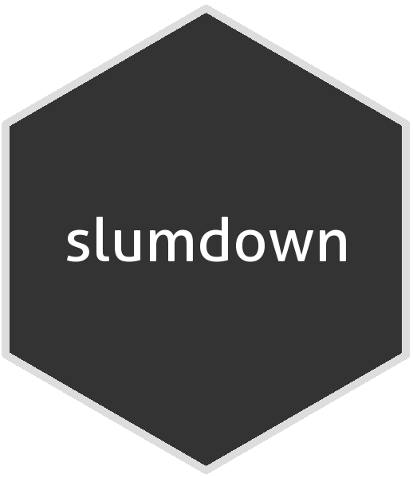

An Introduction to Slumdown
A Hugo theme and R package by Danielle Navarro

The idea behind slumdown is to provide an R package and Hugo theme designed to work together when writing a blogdown site (see the about page for more detail). The posts listed below area work in progress, but are intended to serve as a succinct introduction and how-to guide.